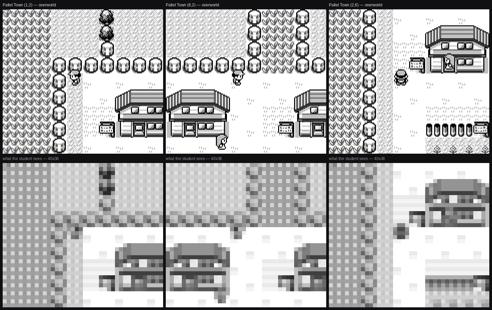
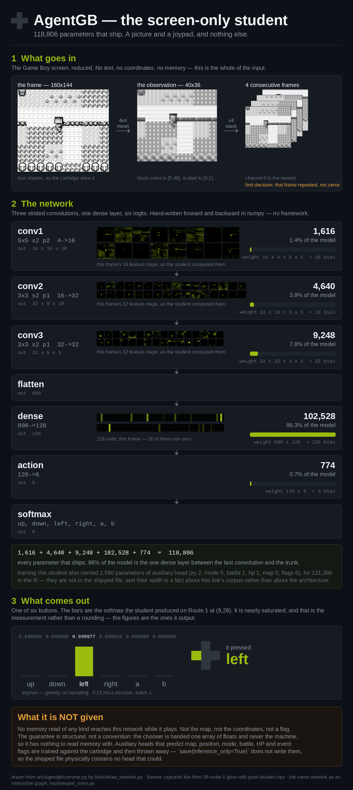

Project · Machine learning
AgentGB
A small local network that plays Pokémon Blue from the screen and nothing else. A picture goes in, a button comes out, on any emulator, at no inference cost worth measuring. It runs the game's opening — bedroom to the Pokédex in Oak's hand, sixteen links — from a cold boot.
models/pixel-student.npz, sha256 b2bb7908…7262c109.
Sampled at temperature 1.0, N=150 cold boots. A rate here always names the weights
it belongs to.

What it does
The player
Screen in, button out
- Input is four stacked 40×36 frames at four ink levels — no coordinates, no map id, no memory read of any kind
- Output is one of six buttons
- Goal-conditioned: the network derives which part of the chain it is in rather than being told
- Exports to ONNX and runs through foreign runtimes
How it is trained
A teacher, a corpus, a student
- A scripted teacher reads the cartridge's memory and walks a shortest path — no network is asked to rediscover pathfinding
- It writes a corpus: one screen, one button, per decision. No weights pass through it
- The student is trained on that corpus by behavioural cloning, then DAgger rounds. A quarter of the collection is a random driver, because a competent teacher never produces the picture of facing a wall
- Fixes since the star pupil are adapters that nudge a frozen base, proven byte-identical before and after
How it is judged
The cartridge keeps the score
- Success is a byte the cartridge writes, read out of the machine at the moment a goal is claimed, with host-enforced no-memory-writes so nothing the policy does can make that byte lie
- Certification runs 3,000 attempts a link, over held-out start tiles
- Every rate is reported per starter as well as in aggregate
- Two start-offset spreads on everything: 0–96 frames and 0–3,000, because the gap between them is how brittle a student is
Where it runs
Not just our emulator
- The committed weights drive the eleven-link opening on mGBA's libretro core from a genuine cold power-on — every matrix multiply through a foreign runtime
- Fan-out certification across twenty workers
- A swarm view: many emulated Game Boys at once, each at its own world position
Current scores
All of these belong to models/pixel-student.npz, sampled at
temperature 1.0.
| What was run | N | Result |
|---|---|---|
| Whole 16-link chain, cold boot to the Pokédex | 150 | 145 (96.7%) |
| — of those, starting BULBASAUR | 90 | 87 (96.7%) |
| — starting CHARMANDER | 13 | 13 (100%) |
| — starting SQUIRTLE | 47 | 45 (95.7%) |
| Take a starter, reaching the goal | 500 | 499 (99.8%) |
| Both doubling-back rooms, after the text trigger | 3,000 ea. | 100.0% |
| 18-link attempt, two independent draws | 16, 16 | 13, then 9 |
The starter is the student's own choice, read back off the cartridge by the harness; the network never sees which one it took. At the entry tile the first decision carries 0.992 bits of entropy and the split over 500 attempts is 254 / 118 / 127. The eighteen-link row is an attempt, not a certification, and is not counted as one.

The design, in one paragraph
Reinforcement learning asks one network to learn two jobs from one scalar reward: where to go, and what am I looking at. AgentGB splits them. Where to go is a search problem, and search is solved — a shortest path over a walkable graph does it. What am I looking at is a perception problem, which is what networks are good for. The student's whole job is to see, which is why it is a hundred thousand parameters and not millions.
The price is that the teacher half is allowed what the student never is: the cartridge's memory and a map walked in advance. An end-to-end agent needs neither. The split is not novel — the PokéAgent Challenge's winning entry decomposes a route into subgoals and distils the result into a network, and the third-place entry paired deterministic pathfinding with a language model. Two of the top three cut the same seam.
What is still not true
- Sixteen links is the game's opening, not the game. The chain ends in the second town. Everything after that is unbuilt.
- The eighteen-link chain is not close. Two draws of 16 read 13 and 9. On the new stage the split is SQUIRTLE 4/12 against BULBASAUR 17/18, reproduced across both draws and not chased to a cause. Part of it is the room: that link's own scripted teacher solves 620 of 800 episodes, with several held-out tiles dead.
- N=150 is not N=3,000. The headline certification bounds a failure rate near 2%, not 0.1%.
- Recorded seeds do not replay exactly. Floating-point non-associativity across BLAS thread counts flips a near-tie early in a long sampled trajectory and the run diverges, so a per-decision replay is not evidence about the episode it was meant to explain.
- The foreign-emulator sweep is behind the student. The mGBA run covers the eleven-link opening. Nothing portable has been re-run at sixteen.
- Training is noisy and the noise is measured. Five runs of one identical configuration on one link scored 100.0, 92.3, 92.3, 84.6 and 77.0 per cent — a 23-point band, most of it the seed. Why that was worth a day →
Writing
-
Every failure was the same starter
A swarm scored 88.5% and looked healthy. All three failures were the same starter Pokémon — one chance in 2,600.
-
The wall you hit walking home
Two measured rates that sum to a hundred are the signature of an impossible task, not a hard one.
-
293 runs stopped on the same text box
A nine-link chain collapsed from 300 of 300 to 7. The student was doing exactly what its supervisor told it.
-
The one failure in twelve thousand
Somebody was standing on the corner tile. Chasing a single attempt instead of rounding it away.
-
Reading the screen without reading the letters
At 40×36 no letterform survives. Six in-game messages are still 97.2% separable, and the first two experiments that said otherwise were both too small.
-
The day that added nothing
Five identical training runs, a 23-point spread, and two published numbers that turned out not to be readable.
The whole arc in order, with the number that was true at each point, is on the progress page.
Where these numbers come from
The parameter counts are read out of the committed weights file: three convolutions
15,504, the dense layer 102,528, the six-way head 774 — 118,806 for the inference
core — plus 320 conditioning coefficients and a 3,204-parameter goal head for
122,330. The file's own metadata records in_shape [4, 36, 40],
n_actions 6, observation "screen".
Every rate carries the weights file it was measured on, its sample size and its temperature, and is recorded in the source repository beside the command that produced it. Both images are committed artefacts of real runs, copied here byte-for-byte apart from PNG re-compression. Game art is Nintendo and Game Freak's and appears here as documentation of a measurement; the project ships no cartridge, no save and no game data.